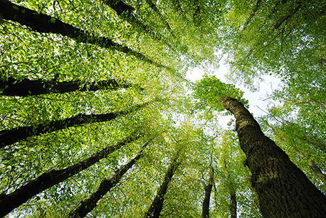
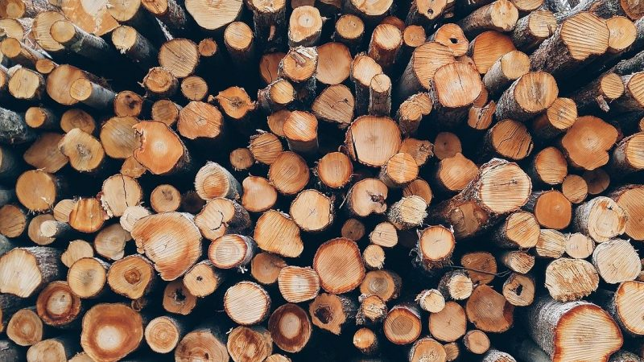
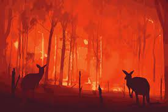
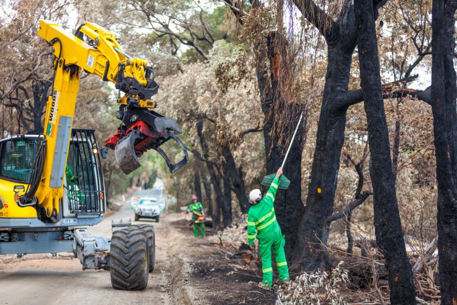
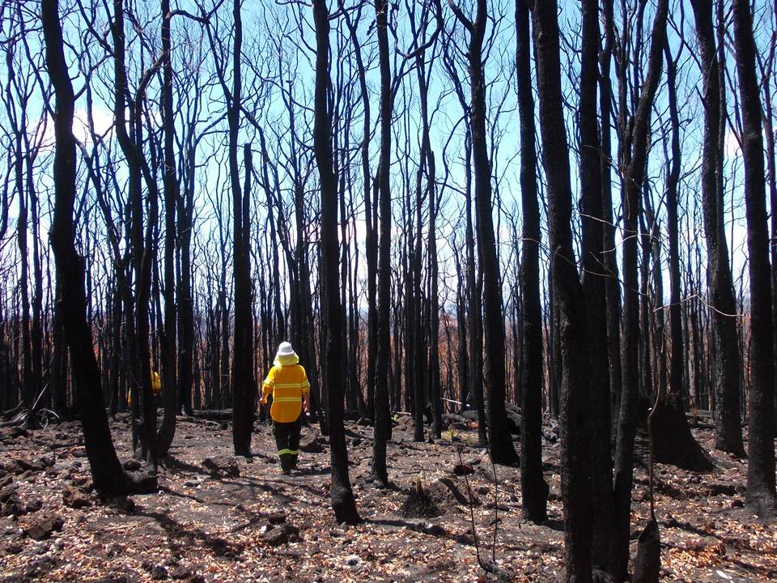

Why is Forest IMPORTANT?

Survival
For living things, it is a resource that we rely on for survival, absorbing carbon dioxide, releasing oxygen and provide a home to more than half of all species found on land.

Energy Resources
At the same time, as a valuable forest energy (wood energy), it can also be traditional non-renewable energy, such as coal, or non-polluting clean renewable energy. It is one of the most valuable energy sources that has received international attention.

Carbon Cycle
Also, climate change is a global crisis, It will bring serious ecological and environmental problems, and the forest ecosystem plays a very important role in the carbon cycle, and can absorb many greenhouse gases such as carbon dioxide.
Forests are important economic and environmental assets. As forestry products, they can generate economic value. As living things, they can fix carbon dioxide. In addition, replacing fossil fuels with bioenergy can reduce carbon dioxide emissions. Therefore, forests are the main force for absorbing carbon dioxide and play a vital role in the sustainable development of energy.
How much damage did bushfire cause to the ENVIRONMENT?
The forests in each area were severely damaged, the vegetation area in Australia was greatly weakened, many creatures died in the wildfires, the weather became worse, and the former holiday paradise became a barren ruin. The fires have devoured tens of thousands of forest areas, turning millennia-old forests into coke.
Nearly 82% of total forest area was destroyed in fires
The first result of the fires was widespread destruction of the environment, resulting in the death of a large area of plants and animals, and in just one month, it spread all over Australia.
Huge Blow to the envrionment
Compared with the trees in previous years, this fire has greatly reduced the forest cover, and some forests can even be said to be completely burned.
Vegetation was severely damaged
How much carbon dioxide emissions did Australia's bushfires produce?
Ahead of the 2019-2020 Australian bushfire season, Australia's forests are thought to reabsorb all the carbon released by bushfires across the country. which means that forests achieve net-zero emissions. Now, however, scientists say global warming is making wildfires burn more intensely and more frequently, believing that the 2019-2020 fires have released about 350 million tonnes (390 million short tons) of carbon dioxide - as much as two-thirds of Australia's average annual CO2 emissions (530 million tonnes (580 million short tons) October-December 2019. University of Tasmania Professor of thermal geography and fire science David Bowman warns: With so much damage caused by the fires, it could take more than 100 years for Australia's forests to reabsorb the carbon released by this year's fire season, he said.
Huge increase in CO2 emissions during 2019-2020
2019-2020 fires have released about 350 million tonnes (390 million short tons) of carbon dioxide - as much as two-thirds of Australia's average annual CO2 emissions (530 million tonnes (580 million short tons) October-December 2019.
Emits huge amounts of greenhouse gases
In January 2020, the UK Met Office said Australia's 2019-2020 bushfires are expected to lead to a 2% increase in atmospheric concentrations of the main greenhouse gas, expected to reach 417 ppm, the largest annual increase in atmospheric carbon dioxide on record. Climate research has shown that conditions leading to extreme bushfires in Australia will only get worse as more greenhouse gases are added to the atmosphere.
How to prevent bushfire like this?
In order to prevent such a tragedy from happening again, we must take every forest fire in Australia seriously, observe it carefully, prevent the spread of the flame in advance, and control it to a human-controlled level.
Prevention
Do a good job in fire prevention, make timely observation reports on forests, and do fire drills to prevent people from losing their homes due to fires. Observe and prevent fires in a timely manner, control the trend of fire spread, and prepare for the evacuation of people and animals
Process
When a fire occurs, fire prevention should be carried out in time to prevent the fire from spreading too much, strengthen the awareness of forest fire prevention and control, and if necessary, conduct human intervention in a timely manner according to the situation to prevent excessive losses.

After the Fire
After the fire is over, the site should be cleaned up in time to prevent further pollution. Clean up the scene, appease people, and rescue wildlife.

Reflection
After the fire is over, analyze the cause of the fire, think about and improve the existing known fire prevention to deal with the next unnecessary forest fire.

For the future
We have indeed seen all kinds of harm caused by fires. Those lost energy, houses and animals have brought a lot of blow to Australia, and it has also reminded us that we cannot sit still when the accident expands, otherwise it will bring more serious damage. as a result of. But with the passing of the wildfires, we have also seen new life bred after the wildfires. I believe that in the near future, we will be able to get back on our feet and make up for the mistakes and regrets we have made now.
Reference
Website data: Forest Monitoring Designed for Action/ anonymous/ https://www.globalforestwatch.org/?lang=en
Data: Widespread phytoplankton blooms triggered by 2019–2020 Australian wildfires/ Weiyi Tang,
Joan Llort, Jakob Weis, Morgane M. G. Perron, Sara Basart, Zuchuan Li, Shubha Sathyendranath, Thomas Jackson, Estrella, Sanz Rodriguez, Bernadette C. Proemse, Andrew R. Bowie, Christina Schallenberg, Peter G. Strutton, Richard Matear / https://www.nature.com/articles/s41586-021-03805-8
Special Climate Statement 71—severe fire weather conditions in southeast Queensland and northeast New South Wales in September 2019, 24 September 2019 , scs71.pdf (bom.gov.au)
The worst wildfire in Australia's history: not only scorched 500 million animals, but also burned the economy, 2020-01-14 22:04, 第一财经 /https://www.yicai.com/news/100468534.html?msclkid=37841b1cc2e211ec86af287cebabd37c
Forest fire area data for the 2019–20 summer bushfire season in southern and eastern Australia/ 28th April /https://www.awe.gov.au/abares/forestsaustralia/forest-data-maps-and-tools/fire-data#previous-versions
Australia's Bushfire Crisis
February 12, 2020/ PERSPECTIVES/ https://www.natureaustralia.org.au/what-we-do/our-insights/perspectives/australias-bushfire-crisis/?gclid=Cj0KCQjwqPGUBhDwARIsANNwjV7ED_FUC9Ut1TixWsEqDHKHEq0F81yOuFfRbZnKMO1Khe58qyZ53LwaAkwGEALw_wcB
Australia's bushfires have emitted 250m tonnes of CO2, almost half of country's annual emissions/ 2019/dec/13/ https://www.theguardian.com/environment/2019/dec/13/australias-bushfires-have-emitted-250m-tonnes-of-co2-almost-half-of-countrys-annual-emissions
Images from:
https://gmienergyexpert.wordpress.com/2013/03/13/how-sustainable-is-biomass-as-a-renewable-energy-source/
https://www.euractiv.com/section/energy-environment/opinion/europe-fiddles-while-forests-burn/
https://portal.ct.gov/DEEP/Forestry/Climate-Change/Carbon-and-Forests
https://www.ashburton.wa.gov.au/live/services/ranger-services/bush-fires.aspx
https://www.abc.net.au/news/2019-04-13/bunyip-spider-05-1/10974858?nw=0
http://global.chinadaily.com.cn/a/202010/30/WS5f9bc5cda31024ad0ba8235a.html
https://resilience-blog.com/tag/prevention/
Code learning from:
How To Make Website Using HTML & CSS | Full Responsive Multi Page Website Design Step by Step/ Mar 15, 2021/
Easy Tutorials/ https://www.youtube.com/watch?v=oYRda7UtuhA
HTML CSS and Javascript Website Design Tutorial - Beginner Project Fully Responsive/ Brian Design/ Sep 14, 2020/ https://www.youtube.com/watch?v=FazgJVnrVuI
https://plotly.com/javascript/